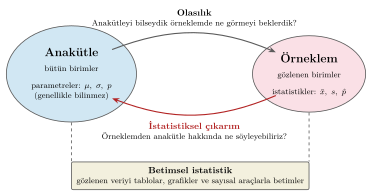
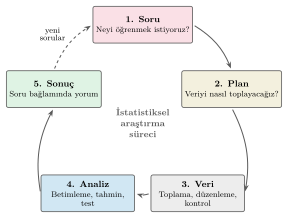

1 Giriş
Bu bölümün amacı.
- İstatistik biliminin tanımını ve kapsadığı konuları öğrenmek
- Betimsel istatistik ile çıkarımsal istatistiği tanımlamak
- Bir istatistiksel çalışmanın sorudan sonuca uzanan aşamalarını tanımak
- İstatistik, veri bilimi ve yapay zeka arasındaki ilişkiyi tartışmak
- Kitabın yapısını ve nasıl kullanılacağını öğrenmek
1.1 İstatistik Nedir?
İstatistik, verilerin toplanması, düzenlenmesi, özetlenmesi, analizi ve yorumlanmasıyla uğraşan bir bilim dalıdır. Sınırlı bilgi ve belirsizlik altında karar verme süreçlerinde istatistik biliminin geliştirdiği araçlar kullanılır. Ekonomide enflasyonun ve işsizliğin ölçülmesinden bir firmanın müşteri memnuniyetini izlemesine, bir ilacın etkisinin sınanmasından seçim anketlerine kadar veriye dayanarak karar verilen her yerde istatistik karşımıza çıkar.
İstatistik biliminin uğraştığı sorular genel olarak iki ana grup altında toplanabilir.
Birinci grup, elimizdeki veride ne gördüğümüzle ilgilidir. Örneğin bir şehirde yaşayan hanehalklarıyla yapılmış bir anketten hareketle ortalama gelir düzeyini ve kaynaklarını, gelirin haneler arasında ne kadar farklılaştığını ya da gelir ile harcama arasındaki ilişkiyi hesaplayabiliriz. Veriyi tablolar, grafikler ve özet ölçülerle anlaşılır hâle getiren bu yöntemlere betimsel istatistik denir. Bir şirketin bir yıldaki bütün siparişleri gibi ilgilendiğimiz birimlerin tamamı (anakütle) gözlenebildiğinde de aynı araçları kullanabiliriz.
İkinci grup sorular ise gözlediğimiz örneklemin ötesinde, anakütle hakkında bilgi edinmeyi amaçlar. Çoğu zaman ilgilendiğimiz şey anketi cevaplayan sınırlı sayıdaki haneler değil, şehirdeki bütün hanelerdir. Bütün haneleri gözlemek pahalı ya da imkânsız olduğu için bir örneklemden hareketle anakütle hakkında sonuç çıkarırız. Aynı şehirden başka bir hane örneklemi seçseydik ortalama gelir biraz farklı çıkardı. Bu yüzden anakütleye ilişkin her sonuç bir belirsizlik içerir ve bu belirsizliği ölçmemiz gerekir. Örneklemden anakütleye genelleme yapan yöntemlere çıkarımsal istatistik denir. Belirsizliği ölçmenin dili ise olasılık kuramıdır. Anakütle ve örneklem kavramlarını izleyen bölümlerde ayrıntılı olarak ele alacağız (bkz. Bölüm 3).
Şekil 1.1 olasılık ile çıkarım arasındaki ilişkiyi özetlemektedir. Olasılık ve istatistiksel çıkarım aynı iki nesne arasındaki ilişkiye farklı yönlerden bakar. Olasılıkta anakütle hakkında bilgi sahibi olduğumuzu varsayarak, buradan alınacak bir örneklemde ne görebileceğimizi sorarız. Çıkarımda ise elimizde gözlemlediğimiz bir örneklem vardır ve amacımız bu örneklemden hareketle anakütle hakkında bilgi edinmektir. İkinci soruyu yanıtlayabilmek için önce birincisini yanıtlamayı öğrenmek gerekir. Bu yüzden kitabın birinci kısmında olasılık kuramını ve olasılık dağılımlarını öğrenecek, çıkarım yöntemlerini ikinci kısımda ele alacağız.

Bilimsel çalışmalarda ve genel olarak belirsizlik altında karar verilmesi gereken durumlarda “neden” sorusu ve nedensellik konusu çok sık karşımıza çıkar. Betimsel ve çıkarımsal istatistik araçları bu tür soruların cevaplanmasında yaygın olarak kullanılır. Reklam harcaması yüksek firmaların satışlarının da yüksek olduğunu gözlemek, reklamın satışları artırdığını tek başına göstermez. Satışları yüksek firmalar reklama daha fazla bütçe ayırıyor da olabilir. Bir ilişkinin nedensel olup olmadığı, verinin nasıl toplandığına ve diğer faktörlere bağlıdır. Bu konuya Temel Kavramlar bölümünde deneysel ve gözlemsel verileri ele alırken (bkz. Bölüm 3) ve korelasyon ile nedensellik arasındaki farkı incelerken (bkz. Bölüm 6) döneceğiz.
İstatistiksel araçlar, geçmiş verilere dayanarak geleceğe ilişkin öngörüler yapmak için de kullanılır. Örneğin bir şirketin gelecek yılki satışlarını ya da bir ülkenin enflasyon oranını tahmin etmek bu türden bir sorudur.
1.2 İstatistiğin Kullanım Alanları
İstatistik hemen her bilim dalında ve meslekte kullanılır. Tablo 1.1 farklı alanlardan örnek sorular ve bu soruların bu kitapta hangi araçlarla ele alındığını göstermektedir. Bu sorular çoğaltılabilir.
| Alan | Örnek soru | Kitapta |
|---|---|---|
| İktisat | Gelir haneler arasında ne kadar eşit dağılıyor? | Sayısal özet ölçüleri, eşitsizlik ölçüleri (Bölüm 5) |
| İktisat | Kalkınma ile yaşam beklentisi ve karbon emisyonu nasıl ilişkili? | Korelasyon, dönüşümler (Bölüm 6) |
| İşletme | Teslim süresi uzadıkça müşteri memnuniyeti düşüyor mu? | Korelasyon, sıra korelasyonu (Bölüm 6) |
| İşletme | Bir günde gelen sipariş sayısı nasıl bir dağılıma uyar? | Kesikli dağılımlar (Bölüm 8) |
| Finans | Bir hisse senedi endeksinin günlük getirileri ne kadar risklidir? Bu getiriler hangi dağılıma uyar? | Normal dağılım, Q-Q grafiği (Bölüm 10) |
| Sosyal bilimler | Bölgesel yaşam memnuniyeti hangi göstergelerle ilişkilidir? | Korelasyon, korelasyon matrisi (Bölüm 6) |
| Sağlık | Pozitif çıkan bir tanı testi ne kadar güvenilirdir? | Koşullu olasılık, Bayes kuralı (Bölüm 7) |
| Eğitim ve kamu politikası | Yeni bir öğretim yöntemi başarıyı artırıyor mu? Mesleki eğitim programlarının istihdam üzerindeki etkisi nasıldır? | Deneysel veri ve deney tasarımı, rassal atama (Bölüm 3) |
Tablodaki soruların bir kısmına bu kitabın birinci kısmındaki betimsel araçlarla yanıt verilebilir. Bir kısmı ise örneklemden anakütleye genelleme yapmayı, yani Kısım II’de ele alacağımız tahmin ve hipotez testi yöntemlerini gerektirir.
1.3 İstatistiksel Araştırma Süreci
Bir istatistiksel analiz veriyle değil, bir soruyla başlar. İstatistik eğitiminde sık kullanılan bir çerçeveye göre bir çalışma beş aşamadan oluşur (Şekil 1.2):

- Soru. Neyi öğrenmek istiyoruz? Soru ne kadar açık tanımlanırsa hangi veriye ihtiyaç duyulduğu da o kadar belirginleşir. “Gençler arasında işsizlik ne kadar yaygın?” sorusu, kimin genç, kimin işsiz sayılacağına karar vermeden yanıtlanamaz. Genç 15-24 yaş arasındakiler mi olacak? Çalışmayan ama iş aramayan bir üniversite öğrencisi işsiz mi sayılacak? (bkz. Örnek 3.1).
- Plan. Veriyi nasıl toplayacağız? Anakütle nedir, örneklem nasıl seçilecek, değişkenler nasıl ölçülecek? Bir deney mi yapılacak, anket mi yapılacak, yoksa mevcut idari kayıtlar mı kullanılacak? Bu aşamadaki hatalar sonradan hiçbir analizle düzeltilemez (bkz. Bölüm 3).
- Veri. Veri toplanır, düzenlenir ve analize hazırlanır. Eksik ya da hatalı gözlemler bu aşamada fark edilir. Uygulamada bir çalışmanın en çok zaman alan kısmı çoğu zaman budur.
- Analiz. Veri önce tablolar, grafikler ve özet ölçülerle incelenir. Ardından soruya uygun yöntemlerle tahminler yapılır ya da hipotezler sınanır.
- Sonuç. Bulgular ilk sorunun bağlamında yorumlanır. Sonucun hangi varsayımlara dayandığı, ne kadar belirsizlik içerdiği ve hangi anakütleye genellenebileceği açıkça belirtilir.
Bu aşamalar çoğu zaman bir döngü oluşturur. Analiz sırasında ortaya çıkan bir bulgu, yeni bir soruya ya da veriyi farklı biçimde toplama ihtiyacına yol açabilir.
Bilimsel yöntem de benzer bir mantığa dayanır. Araştırmacı bir hipotez ileri sürer ve verinin bu hipotezle çelişip çelişmediğini değerlendirir. Veri hipotezle belirgin biçimde çelişiyorsa hipotez reddedilir. Çelişmiyorsa hipotezin doğru olduğu kanıtlanmış olmaz. Bu durumda yalnızca verinin onu reddetmek için yeterli kanıt sağlamadığı söylenebilir. Bu ayrımın önemini çıkarımsal istatistiğe yoğunlaştığımız Kısım II’de hipotez testlerini incelerken göreceğiz.
1.4 İstatistik, Veri Bilimi ve Yapay Zeka
İstatistik, veri bilimi, makine öğrenmesi ve yapay zeka gibi alanların temel taşlarından biridir. Veri bilimi, istatistik, bilgisayar bilimi ve uygulama alanı bilgisinin kesişiminde, veriden bilgi çıkarmaya odaklanan bir çalışma alanıdır. Makine öğrenmesi yöntemlerinin önemli bir kısmı, örneğin regresyon ve sınıflandırma yöntemleri, istatistiksel modellere dayanır. Bir modelin yeni verilerde ne kadar başarılı olacağını değerlendirmek de temelde istatistiksel bir sorudur.
Büyük dil modelleri gibi yapay zeka sistemleri de olasılık kuramı ve istatistiksel öğrenme üzerine kuruludur. Bu sistemler çok büyük veri kümelerinden öğrenir ve ürettikleri çıktılar da olasılıklara dayanır. Bu yüzden bu sistemlerin nasıl çalıştığını, nerede başarılı olup nerede yanılabileceğini anlamak için de istatistik bilgisine ihtiyaç vardır.
1.5 Yapay Zeka Çağında İstatistik Öğrenmek
Bu kitabı okurken yapay zeka araçlarını da kullanacağınızı varsayıyoruz. Bu araçlar bir kavramı farklı biçimde anlatmakta, bir R hata mesajının ne anlama geldiğini açıklamakta ya da bir kod parçasını yorumlamakta ve yeni kod yazmakta yardımcı olabilir. Aşağıda bu yapay zeka araçlarını, öğrenme sürecini engellemeden ya da zayıflatmadan nasıl kullanabileceğinize ilişkin bazı öneriler sunulmuştur. Bu araçların öğrenme üzerindeki etkileri konusunda henüz açık bir uzlaşma bulunmadığı için önerilerimizi kesin kurallar olarak değil, deneyime dayanan tavsiyeler olarak okuyunuz.
Önce kendiniz deneyin ve anlayın. Bir kavramı ya da bir problemi önce kendiniz çözmeye çalışın. Böylece cevabı gördüğünüzde onu anlamlandırmanız kolaylaşır. Hazır bir açıklamayı okuyup “anladım” hissine kapılmak kolaydır. Bu his çoğu zaman yanıltıcıdır. Bir konuyu anlayıp anlamadığınızı denetlemenin iyi bir yolu, açıklamayı kapatıp aynı şeyi kendi cümlelerinizle yazmayı denemektir. Konuya ilişkin alıştırma ve problemlerin çözümünde önce kendiniz denemelisiniz. Unutmayın, öğrenme süreci zihinsel efor gerektirir.
Yeni bir konuda temkinli olun. Hangi alanda olursa olsun yeni bir konuyu öğrenmenin başında yapay zeka araçlarını kullanırken özellikle dikkatli olunması gerekir. Henüz bilmediğiniz bir konu hakkında yapay zekadan aldığınız bir cevabın doğru olup olmadığını değerlendirmek zor olabilir. Cevap açık, ayrıntılı ve ikna edici görünse bile yanlış veya eksik olabilir. Bu durum, cevabı değerlendirecek bilgiye sahip olmadığınız için bir kısır döngü yaratabilir. Bilmediğiniz bir konuyu yapay zekaya sorar, aldığınız cevabı denetleyemeden doğru kabul eder ve böylece yanlış ya da eksik bir bilgi öğrenebilirsiniz. Bu nedenle yapay zekayı, çalıştığınız konuyu öğrendikten sonra açıklamaları karşılaştırmak, örnekler üretmek, kodu anlamak ve kendi çalışmanızı denetlemek için kullanmak daha yararlı olabilir. Yapay zekanın “öğrenmenin yerine ikame edilmesi” durumundan mümkün olduğunca kaçınmak gerekir.
Kodu okuyun ve yazın. Bu kitabın amaçlarından biri R ile veri analizi yapmayı öğrenmenizdir. Bir yapay zeka aracının ürettiği kodu çalıştırmak, o kodu anlamak ve gerektiğinde değiştirebilmekle aynı şey değildir. Kitaptaki kodları kendi başınıza yazmaya, değiştirmeye ve sonuçlarını yorumlamaya çalışmak öğrenmeyi pekiştirebilir.
Çıktıları denetleyin. Bu en zorlu kısımdır. Yapay zeka araçları yanlış bir sonucu da doğru bir sonuç kadar ikna edici bir dille sunabilir. Hangi yöntemin uygun olduğu, yöntemin varsayımlarının verinizde sağlanıp sağlanmadığı ve bir sonucun o bağlamda ne anlama geldiği gibi kararlar veriyi ve soruyu bilmeyi gerektirir. Bir sonucu kullanmadan önce mantıklı olup olmadığını sorgulamak, bu dersin size kazandırmak istediği becerilerin başında gelir. Yapay zekadan yararlanmak, istatistiksel muhakemenin yerini tutmaz. Tam tersine, üretilen sonuçları değerlendirebilmek için istatistiksel bilgi ve muhakemeyi daha önemli hâle getirir.
1.6 Bu Kitap Nasıl Kullanılır?
Kitap iki kısımdan oluşmaktadır. Kısım I betimsel istatistiği, olasılık kuramını ve olasılık dağılımlarını kapsamaktadır:
- Veri ve betimleme.
Rprogramına giriş (Bölüm 2), temel kavramlar (Bölüm 3), frekans dağılımları ve grafikler (Bölüm 4), sayısal özet ölçüleri (Bölüm 5) ve iki değişken arasındaki ilişki (Bölüm 6). - Olasılık ve dağılımlar. Olasılık (Bölüm 7), kesikli rassal değişkenler (Bölüm 8), sürekli rassal değişkenler (Bölüm 9), normal dağılım (Bölüm 10) ve birleşik dağılımlar (Bölüm 11).
Kısım II ise örnekleme dağılımları, tahmin, hipotez testleri, varyans analizi, ki-kare testleri ve regresyon analizi gibi çıkarımsal istatistik yöntemlerini ele almaktadır. Kısım I’deki olasılık ve dağılım bölümleri, Kısım II’deki yöntemlerin kuramsal temelini oluşturur.
Her bölüm, o bölümde neler öğreneceğinizi özetleyen bir amaç kutusuyla başlar. Bölüm içinde kavramlar tanımlar ve teoremlerle verilir ve örneklerle somutlaştırılır. Bazı önemli uyarılar ayrı kutular içinde yer alır. Her bölümün sonunda iki tür soru bulunur. Çözümlü alıştırmalar adım adım çözülmüş sorulardır. Konuyu pekiştirmek için önce kendiniz çözmeye çalışıp sonra çözümle karşılaştırmanız önerilir. Problemler ise çözümsüz verilmiştir.
Kitaptaki hesaplamaların ve grafiklerin çoğu R ile yapılmıştır ve kodlar metnin içinde yer alır. Kodları kendi bilgisayarınızda çalıştırarak sonuçları yeniden üretebilirsiniz. Örneklerde kullanılan veri kümeleri Temel Kavramlar bölümünde tanıtılmaktadır (bkz. Tablo 3.4). Simülasyona dayanan örneklerde set.seed() fonksiyonu kullanıldığı için aynı R sürümüyle çalıştığınızda aynı sonuçları elde edersiniz.
Gösterimler ilgili bölümlerde tanıtılmaktadır. Anakütle ve örneklem simgeleri için Tablo 3.1, terimlerin İngilizce karşılıkları için Terimler Sözlüğü’ne bakabilirsiniz.
1.7 İstatistiksel Yazılımlar
İstatistiksel analizlerin büyük kısmı bugün bilgisayar yazılımlarıyla yapılır. Yaygın olarak kullanılan yazılımlar arasında R, Python, Stata, SPSS, SAS ve Excel sayılabilir. Bu yazılımların bir kısmı ticari, bir kısmı ise açık kaynaklı ve ücretsizdir.
Bu kitapta R kullanıyoruz. R bir programlama dili olduğu için yaptığınız analizin her adımı kod olarak kaydedilebilir. Böylece analiz başkaları tarafından, ya da aylar sonra sizin tarafınızdan, aynen tekrarlanabilir. R’ın diğer özelliklerini ve kurulumunu bir sonraki bölümde ele alacağız (bkz. Bölüm 2).
1.8 Problemler
Problem 1.1 Aşağıdaki soruların her birinin bir olasılık sorusu mu yoksa bir istatistiksel çıkarım sorusu mu olduğunu belirtin ve Şekil 1.1 üzerinden kısaca açıklayın.
- Hilesiz bir para 10 kez atılırsa en az 7 tura gelme olasılığı nedir?
- Bir para 10 kez atılmış ve 7 tura gelmiştir. Paranın hileli olduğu söylenebilir mi?
- Bir şehirdeki hanelerin yüzde 30’unun özel sağlık sigortası vardır. Rassal seçilen 200 hanenin en az yüzde 35’inin sigortalı olma olasılığı nedir?
- Rassal seçilen 200 hanenin 70’inin özel sağlık sigortası vardır. Şehirdeki bütün hanelerin yüzde kaçının sigortalı olduğu hakkında ne söylenebilir?
Problem 1.2 Bir gazetede “Yapılan araştırmaya göre gençlerin yüzde 70’i geleceğinden endişe duyuyor” başlıklı bir haber yayımlanmıştır. Bu sonucun ne kadar güvenilir olduğunu değerlendirebilmek için hangi bilgilere ihtiyaç duyarsınız? Araştırmacının anakütleyi, örneklemi ve soruyu nasıl tanımladığını düşünerek en az dört soru yazın.
Problem 1.3 Kendi ilgi alanınızdan istatistikle yanıtlanabilecek iki soru yazın. Her soru için Tablo 1.1 örneğindeki gibi hangi verinin gerekeceğini ve sorunun betimsel araçlarla mı yoksa örneklemden anakütleye genelleme yapmayı gerektiren yöntemlerle mi yanıtlanabileceğini belirtin.
Problem 1.4 İlgi alanınızdan istatistikle yanıtlanabilecek bir soru seçin. Bu soru için istatistiksel araştırma sürecinin beş aşamasını (soru, plan, veri, analiz, sonuç) kısaca açıklayın. Hangi aşamada en büyük zorlukla karşılaşacağınızı düşünüyorsunuz?
Problem 1.5 Bir yapay zeka aracından, bir veri kümesindeki iki değişken arasındaki ilişkiyi inceleyen bir R kodu ve bu kodun sonuçlarına ilişkin bir yorum aldığınızı düşünün. Bu kodu ve yorumu kullanmadan önce neleri kontrol edersiniz?